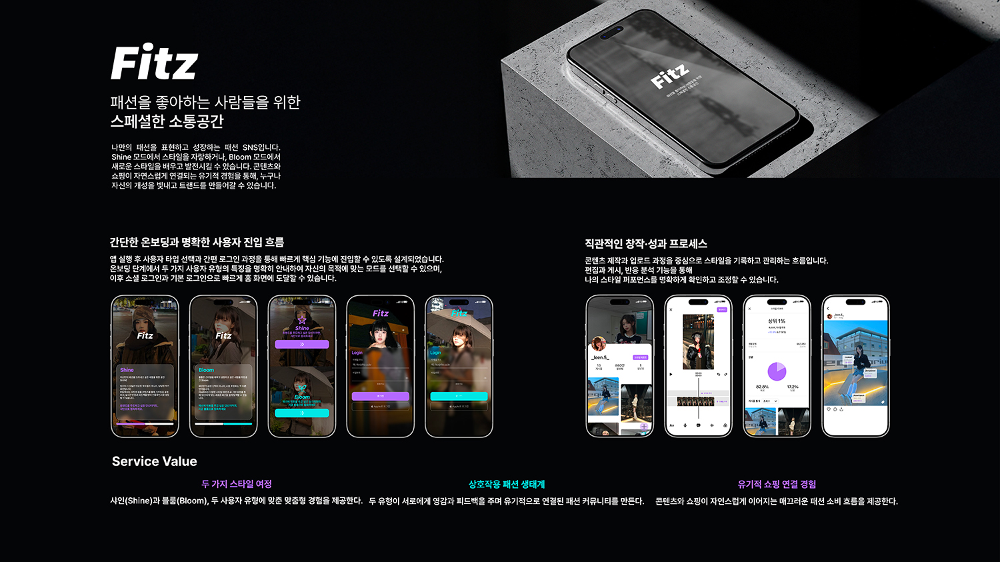

UI/UX Design
Fitz는 패션을 중심으로 한 소셜 네트워크 앱 디자인 프로젝트입니다.
사용자가 자신의 코디를 공유하고 다른 유저의 스타일을 탐색할 수 있도록, 직관적인 피드 구조와 깔끔한 시각 언어를 중심으로 UI를 설계했습니다. 패션 콘텐츠 특성에 맞게 이미지가 돋보이는 레이아웃을 우선시했습니다.

패션 SNS 앱 사례 분석 및 타겟 유저 리서치. 주요 경쟁 앱의 피드 구조와 탐색 패턴을 조사했습니다.
피드, 탐색, 프로필 플로우를 설계. 사용자가 코디를 업로드하고 탐색하는 핵심 경로를 정의했습니다.
이미지가 돋보이는 피드 레이아웃과 컴포넌트 시스템 구축. 패션 콘텐츠 특성에 맞는 시각 언어를 정의했습니다.
Figma 프로토타입으로 인터랙션 흐름을 검증. 핵심 유저 시나리오에 따른 화면 전환을 완성했습니다.